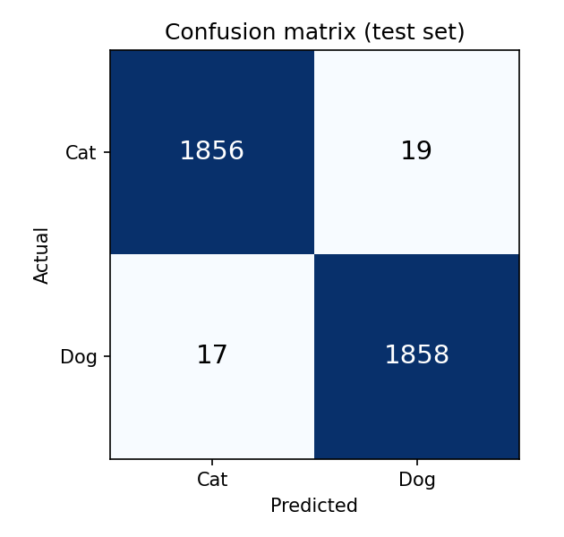
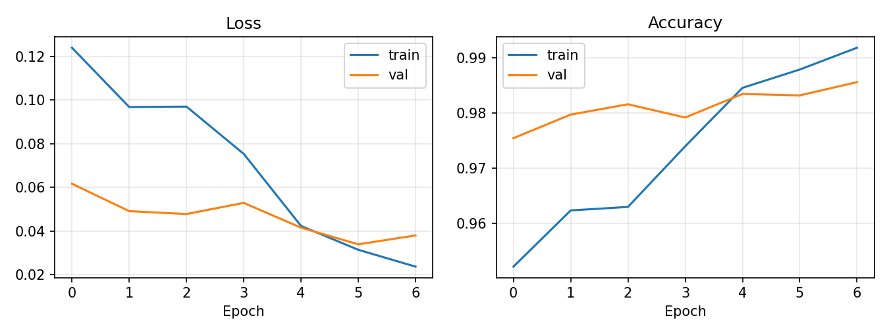

Is it a cat or a dog?
Drop a photo and a neural network answers in your browser. The image never leaves your device.
Deep Learning semester project. MobileNetV2, fine-tuned on 25,000 Kaggle photos.
Loading model…
Dataset
Secondary dataset: Dog and Cat Classification Dataset from Kaggle. It holds about 25,000 JPEG photos in two folders, Cat and Dog, in roughly equal numbers.
- Unreadable or corrupt files are removed before training.
- Stratified split with a fixed seed: 17498 train, 3750 validation, 3750 test images.
- Training images get random crops, horizontal flips and colour jitter. Validation and test images are only resized to 256 px and centre-cropped to 224 px.
Model and code
MobileNetV2 pre-trained on ImageNet, with its final layer replaced by Dropout(0.3) and a 2-way linear layer. Training runs in two phases: 3 epochs on the new head with the backbone frozen (lr 1e-3), then 4 epochs fine-tuning every layer (lr 1e-4). AdamW optimiser, cross-entropy loss, the best epoch by validation accuracy is kept.
The PyTorch weights are exported to ONNX (web/model/catdog.onnx) and run in this page with ONNX Runtime Web.
Training and evaluation code · PyTorch weights (.pth) · ONNX model
Results on the held-out test set
| Accuracy | Precision | Recall | F1 |
|---|---|---|---|
| 99.04% | 99.04% | 99.04% | 99.04% |
Precision, recall and F1 are averaged over both classes. Test images were never used for training or model selection.


Project links
- GitHub repository source code, dataset link, model weights
- Project report
- Presentation slides
- Presentation video on YouTube
- LinkedIn post
- This website